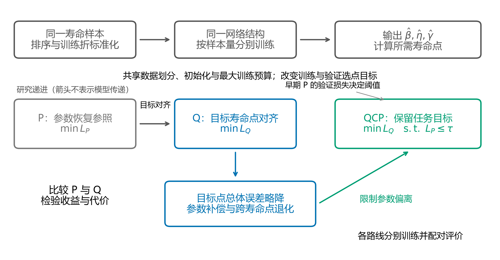
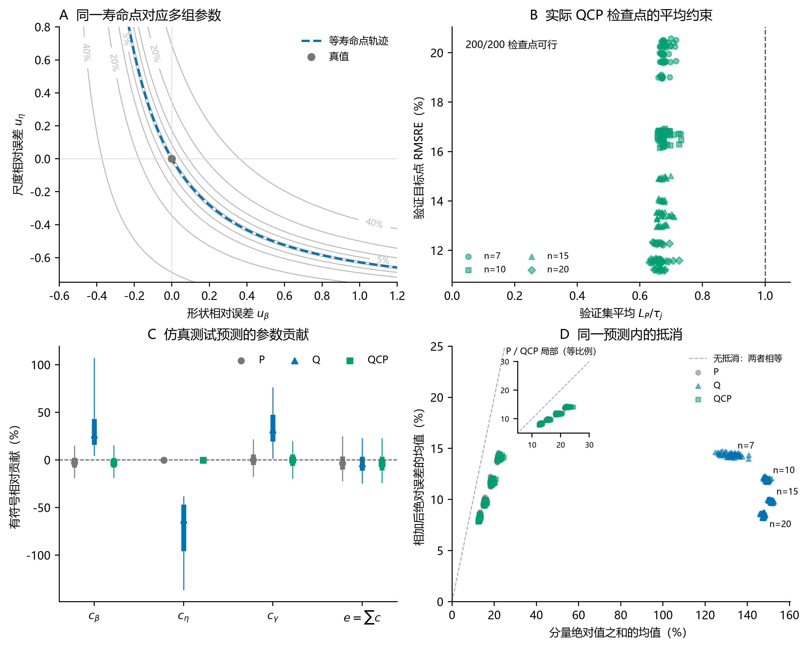
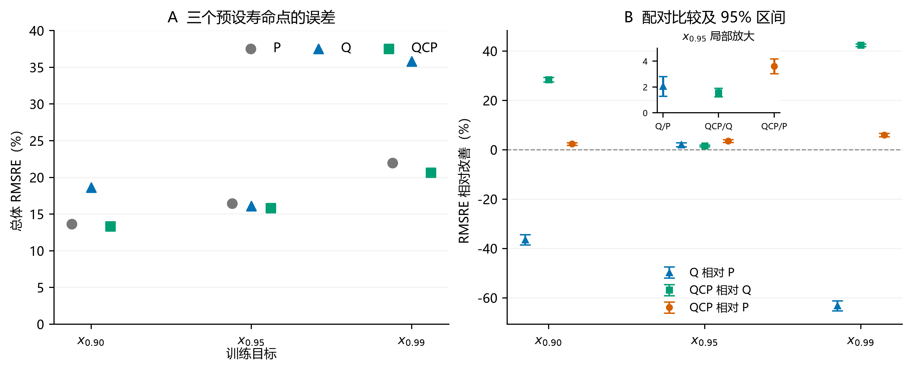
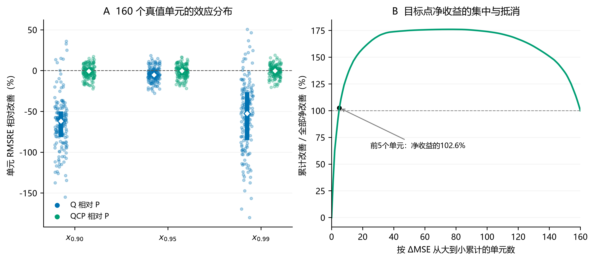

Study02 v2.7.0 · Reading copy generated from the editable manuscript三参数 Weibull 寿命点估计中的任务对齐：单点监督的收益、代价与参数约束
摘要
当最终使用量是可靠度寿命点时，参数误差最小并不等于该寿命点误差最小。本文以三参数Weibull神经估计为例，研究任务对齐的收益、参数代价及修复方式。参数导向流程P与目标寿命点导向流程Q共用数据、网络和最大训练预算，分别按对应损失训练和验证选点。固定尺度仿真覆盖40个参数组合、4种样本量和200个配对模型单元。Q将目标 x0.95 的总体均方根相对误差（RMSRE）由16.43%降至16.09%，相对改善2.07%（95%经验区间：1.28%至2.81%），但 x0.90、x0.99 的误差分别增加36.41%和63.11%。统一验证准则后，Q仍保留1.32%的目标改善（0.63%至1.96%）。损失几何与逐预测分解显示，单点监督允许较大的参数误差在目标点相互抵消。参数约束流程QCP将目标RMSRE降至15.84%，并修复另外两点的退化；固定加权参数损失获得接近的精度。三点直接监督也能缓解跨点误差，但参数恢复弱于参数正则化流程。总体收益集中于少数高误差单元，P仍保留典型绝对误差优势。这些事后补充对照复用原样本；当前证据支持根据寿命点任务与参数解释需求共同设计监督，不支持QCP精度优于简单加权。
关键词：三参数Weibull；可靠度寿命点；任务对齐；参数补偿；约束学习；神经估计
Abstract
Minimizing parameter error need not minimize error in a derived engineering quantity. We examine the benefits and costs of aligning three-parameter Weibull neural estimation with one reliability life point. Parameter-oriented (P) and target-oriented (Q) procedures share data, network structure, and maximum training budgets, but use their respective training and validation losses. Fixed-scale simulations cover 40 parameter combinations, four sample sizes, and 200 paired model units. Q reduces pooled root mean squared relative error (RMSRE) at x0.95 from 16.43% to 16.09%, a relative improvement of 2.07% (95% empirical interval: 1.28%–2.81%), but increases error at x0.90 and x0.99 by 36.41% and 63.11%. With a common validation criterion, Q retains a 1.32% target improvement (0.63%–1.96%). Loss geometry and prediction-level decompositions show that single-point supervision permits large, compensating parameter errors. Parameter-constrained learning (QCP) reduces target RMSRE to 15.84% and repairs deterioration at the other two points; fixed-weight parameter regularization achieves similar accuracy. Direct supervision of all three points also reduces the cross-point errors, but recovers parameters less accurately than the parameter-regularized procedures. Pooled gains concentrate in a few high-error cells, while P retains an advantage in typical absolute error. These post-test controls reuse the original samples. The evidence supports matching supervision to both the intended life points and parameter interpretation, without demonstrating an accuracy advantage of QCP over simple weighting.
1 引言
可靠性分析既要描述寿命分布，也常要确定给定可靠度下的寿命边界。三参数 Weibull 模型以形状 β、尺度 η 和位置 γ 描述寿命，其小样本参数估计是长期研究的问题 [1,2,3,4]。经典估计方法 [5,6,13,14] 与神经网络方法 [7,12] 通常先恢复分布参数，再据此计算可靠度寿命点。当应用最终关心某个寿命点时，训练目标如何定义，可能直接影响该点的估计风险。
设 R 为生存概率，可靠度寿命点满足 R(xR)=R。本文关注的 x0.95 是可靠度为 95% 时的寿命边界，即失效分布的 5% 分位点。对于输出三个参数的监督网络，常见训练目标是三个归一化参数误差的等系数和。归一化消除了量纲和数值尺度的直接影响，1:1:1 系数则提供了透明、可复现的参数恢复参照。然而，这组系数来自度量约定，三个参数对 x0.95 的实际影响还取决于寿命点公式、参数位置及误差间的相互作用。
一种更直接的做法是由网络输出同样的三个 Weibull 参数，再通过分布公式计算 x0.95，并以该寿命点的预测误差训练网络。分位数回归、目标泛函与任务聚焦学习均体现了按最终使用量定义预测目标的思想 [8,9,10,11,15]；两参数 Weibull 的小样本研究也分别比较了参数估计量及其插件分位点估计量的偏差和均方误差 [16]。本文进一步考察三参数情形下，基于仿真训练的神经估计器如何因训练目标及其验证选择规则不同而改变目标寿命点风险 [18,19]。
寿命点监督同时带来一个结构性问题：三个参数决定一条分布曲线，单个寿命点却只提供一个标量目标。不同参数组合可以给出相同的 x0.95，同时产生不同的 x0.90 和 x0.99。直接优化 x0.95 因而可能允许参数误差相互补偿，使目标点准确而其他寿命点失真。任务对齐的收益需要与这种内部自由度及其下游代价一并检验。
基于这一逻辑，本文依次回答三个问题：寿命点损失 Q 相对参数损失 P 能否提高 x0.95 的估计精度；单点监督是否引起参数补偿和跨寿命点退化；以 Q 为主目标、以参数误差定义可行域的 QCP 能否修复这一缺口。P 提供参数恢复参照，Q 检验任务对齐并揭示补偿机制，QCP 在此基础上组合任务目标与参数约束。本文的贡献在于量化任务对齐的收益与代价、解释单点目标允许的参数补偿，并比较引入参数恢复要求后的修复效果。为检验约束求解的必要性，另以固定加权参数损失QP作为简单参照（附录B.9）；主文保留P→Q→QCP的研究递进。
2 方法
2.1 寿命模型、数据与评价域
本研究先比较参数误差导向流程 P 与目标寿命点导向流程 Q，检验任务对齐的收益及其对其他寿命点的影响；再以参数约束构成 QCP，评价约束能否修复单点监督的代价（图1）。三条路线使用同一网络结构并输出三个参数，各自按对应目标训练和选择验证检查点。

图1 共同输入与网络设置下的研究设计。先以 P 为参数恢复参照检验 Q 的任务对齐效果，再针对 Q 的参数补偿与跨寿命点退化构建 QCP。上方表示共同预测流程，下方表示比较与方法提出的逻辑；每个模型单元分别训练各路线。QCP 的参数阈值由早期 P 参考模型的验证损失确定。
三参数 Weibull 模型及其寿命点为
R(x)=exp[−(ηx−γ)β],xR=γ+η[−lnR]1/β,x>γ.
仿真采用
β∈{1.5,2,2.5,3,3.5,4,4.5,5},η=1000,γ/η∈{0.10,0.25,0.50,0.75,1.00},
以及样本量 n∈{7,10,15,20}。每个参数—样本量组合生成 300 组独立、未删失寿命样本，共 160 个固定真值单元、48,000 组样本。每组输入为升序排列的原始寿命观测，不作逐样本均值归一化；输入位置的标准化仅使用当前训练折拟合的均值与标准差。
按重复抽样编号模 5 分折，每轮以一类为测试、下一类为验证、其余三类为训练。每个参数组合相应有 180、60、60 组训练、验证、测试样本。五轮划分中的样本不跨越当前训练与测试集合，但各轮训练集存在重叠。各集合覆盖同一组参数点，因而评价的是设计域内新样本的估计表现。
固定 η 下，该网格的真实 x0.95 仍为 238.05–1552.09。本文采用相对误差，使各寿命水平按比例误差比较。尺度标签始终为1000，P可通过学习常量降低尺度误差，而Q允许牺牲尺度恢复以减小寿命点误差。因此，本设计中的参数补偿也受到固定尺度标签的影响，不能直接外推到尺度变化的估计任务。结论对应固定物理尺度下的参数网格与小样本估计。
2.2 共同网络与两种基本损失
每个样本量分别训练多层感知机（MLP），结构为 n→256→128→64→3，隐藏层使用 ReLU，计算采用双精度浮点数（float64）。三条路线共用参数解码，保证
β^>0,η^>0,0<γ^<min(X).
具体地，设网络原始输出为 o1,o2,o3，三条路线均使用
β^=softplus(o1)+ε,η^=softplus(o2)+ε,γ^=min(X){δ+(1−2δ)sigmoid(o3)},
其中 ε=10−6、δ=10−7。该变换对应当前正位置参数域；三条路线使用相同的输出范围与边界余量。
优化器为 Adam，学习率 10−3、权重衰减 10−4、批量大小 256。当前比较统一最多训练 600 轮，早停耐心值为 60 轮。每个配对模型单元内，三条路线共享样本划分、标准化、初始化、首轮小批量顺序和网络结构。
令单组样本的归一化参数误差为
u=(ββ^−β,ηη^−η,ηγ^−γ).
参数路线 P 最小化
LP=mean∥u∥2.
三个平方项在上述归一化坐标中使用相同系数。位置误差以 η 归一化，避免其度量随 γ 接近零而发散。因此，1:1:1 表示三个无量纲误差项等系数相加；该损失直接控制参数恢复，其度量与寿命点敏感度无关。
路线 Q 使用相同三参数输出，由 Weibull 公式计算目标寿命点，最小化
LQ=mean[(x0.95x^0.95−x0.95)2].
P 与 Q 分别以最低验证 LP 和 LQ 选择模型检查点。两条路线共用输出表示和网络容量，比较的是训练目标与对应验证选择规则构成的完整流程，实测差异包含训练更新和检查点选择两部分。补充对照P_QSELECT统一采用验证 LQ 选点和早停，以检验相同验证准则下的训练目标差异（附录F）。
2.3 参数约束寿命点学习 QCP
QCP 保留目标寿命点误差作为优化目标，以参数损失限制可接受解：
θminLQ(θ)s.t.LP(θ)≤τj,τj=cLP,ref,j.
j=(n,k,s) 表示模型单元，其中 k 为折次，s 为随机种子。LP,ref,j 来自匹配的早期 P 参考模型的最佳验证参数损失，该参考训练最多进行 300 轮，早停耐心值为 20 轮。QCP 阈值在当前 600 轮 P 模型的测试结果读取之前确定，并在后续训练中保持不变。
令 gb=LP,b−τj、gtr=LP,tr−τj，其中 LP,tr 为该轮训练过程中各小批量参数损失按样本数加权的平均值，而非以轮末固定参数重新评价全训练集的损失。约束求解采用增广拉格朗日方法的非负乘子框架 [17]。本研究在小批量训练中使用下式，并在每轮结束时更新乘子：
LAL,b=LQ,b+2ρ[max{0,μ+ρgb}]2−μ2,μ←max{0,μ+ρgtr}.
当约束松弛且乘子为零时，参数项不参与更新；约束受到违反时，其作用由乘子与违反程度调节。模型检查点选择先检查验证集平均 LP≤τj，再从可行训练轮次中选出验证 LQ 最小者。训练阶段通过小批量参数损失施加约束惩罚；检查点可行性则以验证集平均参数损失判断。二者都不提供单条预测的误差上界。
c 与 ρ 在 8 个验证单元上选择，共进行 48 次模型训练；另以 8 次训练检查预算扩展，最终取 c=1.5,ρ=0.1 和 600/60 训练设置。这两个选择阶段均未访问测试指标。随后形成 200 个 QCP 模型。为比较相同的最大训练机会，在原 P/Q 测试结果读取后，将 P、Q 扩展到同样的 600/60 设置；本文主表采用这一共同预算分析。完整实验先后顺序见附录 A.2。
2.4 单点监督与参数补偿
2.4.1 局部损失几何
P 与 Q 的差异可以在共同的 u 坐标下表示。记单组样本的相对寿命点误差为 e(u)，则
ℓP=∥u∥2,∇uℓP=2u,HP=2I3,
ℓQ=e(u)2,∇uℓQ=2e(u)∇ue(u).
令 a=−lnR、t=a1/β，寿命点对三个参数的导数为
∂γ∂xR=1,∂η∂xR=t,∂β∂xR=−β2ηtlna.
在真值处，归一化敏感度向量及 Q 的 Hessian 为
s0=(xRβ∂β∂xR,xRη∂η∂xR,xRη∂γ∂xR),HQ(0)=2s0s0T.
局部寿命点平方误差可写为
(s0Tu)2=i∑s0,i2ui2+2i<j∑s0,is0,juiuj.
对角项反映各参数的局部敏感度，交叉项则允许误差联合放大或抵消。本文将这种由寿命点公式产生的联合评价称为任务诱导耦合；它同时改变参数方向的相对作用及其交互关系。
P 在三个方向上惩罚参数误差；Q 的局部 Hessian 为秩一，在与 s0 正交的两个方向上没有二阶惩罚。更直接地说，x^0.95=x0.95 在满足参数取值限制的输出空间中定义一张等寿命点曲面。沿曲面改变参数可以保持目标点不变，同时改变其他寿命点。这是单个标量目标在输出误差空间留下的自由度，区别于三参数 Weibull 模型本身的统计识别。
不同真值点的敏感度方向不同；若将它们在共同三维误差坐标下的局部 Hessian 求和，其秩可能高于一。条件网络的情形又有所不同：它根据每个输入样本输出参数，而非为全部样本估计同一组三参数，因此可能在不同输入处沿不同的近等寿命点方向偏移。共享权重、网络容量和正则化决定了这些偏移能否同时实现。局部几何揭示单点目标允许的补偿方向，终态参数分布与跨点误差则检验这种可能性是否在实际预测中出现；前者本身不确定网络权重空间 Hessian 的秩。
2.4.2 有限误差下的敏感度
有限误差下，目标误差仍可由沿真值到预测值路径的平均敏感度精确表示。该敏感度随预测参数改变，求导时需保留这种依赖；真值处的固定线性近似因而不能代表完整Q损失。精确表达、求导条件与静态代理检验见附录C.2–C.4。
2.4.3 终态参数补偿的量化
为量化终态预测中的补偿，本文对 e 作精确的三项参数贡献分解，并定义
C=mean[1−∣cβ∣+∣cη∣+∣cγ∣∣cβ+cη+cγ∣].
分母为零时该行取零。C 越接近 1，表示三项贡献相加后的绝对目标误差相对于各项绝对值之和越小。C 与平均 LP 配合使用：前者反映误差抵消程度，后者反映参数偏离幅度。具体对称分解见附录 C.1。
以 P 为参照，另定义 QCP 对超额补偿的恢复比例
Resolutioncomp=CQ−CPCQ−CQCP.
本研究中 CQ>CP，该比例以 Q 相对 P 增加的补偿为分母，衡量 QCP 使补偿指标回落的程度。寿命点精度改善另由 RMSRE 及其相对改善量评价。
2.5 配对评价与统计汇总
训练使用 10 个随机种子、4 个样本量和 5 折，形成每条路线 200 个模型单元，共 600 次模型训练。每条路线有 480,000 条测试预测，来自 48,000 组寿命样本在 10 个训练种子下的重复预测；统计推断保留这种重复结构，不把它们视为 480,000 组独立样本。完整随机种子、配对关系和数据来源见附录 A。
主指标为均方根相对误差：
RMSREm(R)=mean[(xRx^R,m−xR)2].
先对 200 个模型单元的 MSE 等权平均，再开方。相对改善定义为
Ia→b(R)=RMSREa(R)RMSREa(R)−RMSREb(R),
正值表示路线 b 更好。区间估计按 n 分层重采样折次，同时全局重采样随机种子，始终保持路线配对，共重复 200,000 次。考虑到折间训练数据重叠及训练种子数量有限，所报 95% CI 为设计级经验 bootstrap 近似区间。
x0.95 为训练目标；另外从同一组参数预测派生 x0.90 和 x0.99，评价目标点收益能否延伸至其他寿命点。后两点的分析在读取对应派生结果前固定，但属于既有模型上的事后机制分析。区域效应以 160 个固定真值单元 (n,β,γ/η) 汇总，每单元每路线有 3,000 条预测。
为描述 RMSRE 之外的误差形态，同时报告目标点的平均绝对相对误差、绝对相对误差中位数、95% 分位点、±10% 内比例和有符号相对偏差。固定真值单元内的偏差—方差分解见附录 B.5。这些指标分别反映整体平方误差、典型误差、尾部和方向，不合并为综合分数。其中“绝对误差的 95% 分位点”是误差分布的尾部统计量，应与可靠度寿命点 x0.95 区分。
对固定真值单元 c，记 bc=mean(ec)、vc=mean[(ec−bc)2]，则
BRMS=meancbc2,Swithin=meancvc,RMSRE2=BRMS2+Swithin2.
BRMS 不允许不同区域的正负偏差相互抵消；Swithin 则包含抽样重复与训练随机性形成的单元内波动。各比较的区间与分层结果未作多重比较校正，分别按既定主比较和描述性机制分析解释。
3 结果
3.1 单点目标对齐的收益与代价
在共同预算下，Q 将目标 x0.95 的总体 RMSRE 从 16.43% 降至 16.09%，相对改善 2.07%（95% CI：1.28% 至 2.81%）。然而，相同参数预测在另外两个寿命点上的表现明显下降：x0.90 和 x0.99 的 RMSRE 相对 P 分别增加 36.41% 和 63.11%（表1）。直接训练目标的收益温和，未受直接监督的寿命点代价更大。
表1 三条路线在三个寿命点的总体 RMSRE
| 寿命点 |
P |
Q |
QCP |
Q 相对 P 改善（95% CI） |
QCP 相对 Q 改善 |
QCP 相对 P 改善（95% CI） |
| x0.90 |
13.66% |
18.63% |
13.34% |
−36.41%（−38.51% 至 −34.32%） |
28.42% |
2.35%（1.81% 至 2.90%） |
| x0.95 |
16.43% |
16.09% |
15.84% |
2.07%（1.28% 至 2.81%） |
1.56% |
3.60%（3.03% 至 4.18%） |
| x0.99 |
21.96% |
35.82% |
20.65% |
−63.11%（−65.27% 至 −61.16%） |
42.36% |
5.98%（5.28% 至 6.67%） |
每条路线包含同样的 200 个配对模型单元。QCP 相对 Q 的完整区间见附录 B.2；表内负改善表示误差增加。RMSRE 的百分数表示误差水平，相对改善的百分数表示两路线误差水平之比。
目标点精度并未保证参数恢复。Q 的平均 LP 达到 71.7，而 P 为 0.0539；其平均补偿指数从 P 的 0.332 增至 0.915。图2A以等寿命点切片说明这种可能性，C–D则对同一批仿真测试预测作逐样本贡献分解。Q 的形状与位置贡献主要为正，尺度贡献主要为负；将同一预测中的贡献相加后，绝对误差明显小于各项绝对值之和。较大的参数偏离与较强的抵消因而同时出现在实际预测中。

图2 A固定 γ=100、真值 (β,η)=(1.5,1000)，展示二维输出切片；虚线为相同 x0.95 的参数轨迹，灰线为绝对相对寿命点误差等高线。B直接展示200个QCP选定检查点的验证集平均参数损失与目标点误差；横轴为平均 LP/τj，虚线为可行性边界。该约束不是单条预测的误差上界。C使用附录C.1的精确对称分解；每条路线480,000条预测，标记为中位数、粗线为四分位范围、细线为5%–95%范围，均为描述性分布范围。D每点为一个模型单元：先逐样本计算分量绝对值之和与相加后的绝对误差，再分别取均值；虚线表示无抵消。插图用相同横纵比例放大P/QCP点簇，Q点簇标出样本量。每路线200个模型单元，底层测试样本在训练种子间共享。
3.2 参数约束保留目标收益并修复跨寿命点表现
加入参数约束后，目标点总体精度得以保留并小幅提高：QCP 在 x0.95 上较 Q 再改善 1.56%（95% CI：1.24% 至 1.90%），在两个非目标点则分别改善 28.42% 和 42.36%。与 P 相比，三个寿命点的总体 RMSRE 均小幅降低（表1）。因此，本次比较中约束的主要作用是修复跨寿命点退化，同时保留目标点的总体收益。
参数诊断与这一变化相符。QCP 的 200 个选定检查点均满足验证集平均参数约束，测试平均 LP 为 0.0552，补偿指数为 0.345，均接近 P。按 (CQ−CQCP)/(CQ−CP) 计算，QCP 使 Q 相对 P 的超额补偿减少 97.8%。这一比例描述参数约束下补偿指标的回落，寿命点收益则由上述 RMSRE 直接评价。

图3 A 为三个预设寿命点的总体 RMSRE 点估计；B 为 Q 相对 P、QCP 相对 Q 和 QCP 相对 P 的 RMSRE 相对改善及既有配对 crossed-bootstrap 95%区间，正值表示改善。所有比较使用同样的200个模型单元。A展示绝对误差水平，B展示配对差异及其不确定性，插图放大目标点的小效应；精确数字见表1及附录 B.2。更宽可靠度范围的描述曲线和参数误差分量见附录图B3。
3.3 总体收益与区域差异
QCP 对 Q 的修复在多数固定真值单元内成立：三个寿命点分别有 155、119、146 个单元改善。相对 P，则只有 74、76、77 个单元改善（表2），三个单元效应中位数均略偏向 P。Q 在目标点也仅有 42/160 个有利单元。因此，目标点总体 RMSRE 的降低没有转化为多数真值单元的共同获益；它取决于各单元平方误差改变的幅度，而非改善单元占多数。
表2 固定真值单元的改善方向与效应中位数
| 寿命点 |
Q 优于 P |
QCP 优于 Q |
QCP 优于 P |
QCP 相对 P 的单元效应中位数 |
| x0.90 |
8/160 |
155/160 |
74/160 |
−0.67% |
| x0.95 |
42/160 |
119/160 |
76/160 |
−0.26% |
| x0.99 |
13/160 |
146/160 |
77/160 |
−0.08% |
各单元具有相同数量的预测。效应中位数由单元相对改善计算，负值表示 P 略好。单元共享训练网络，方向计数作为固定设计域的描述性统计，不按 160 次独立试验计算二项符号检验。
为定位收益来源，定义每个真值单元的贡献 Δc=MSEP,c−MSEQCP,c。在 x0.95 上，将 160 个单元按 Δc 从大到小排列，前 5 个单元的改善合计达到全部净改善的 102.6%；其余 155 个单元合计略有抵消（图4）。按 P 的单元误差分组后，正收益主要来自误差最高的四分组，中间两组平均略偏向 P。由此可见，QCP 对 P 的总体收益集中于少数高误差单元，而非各区域普遍改善。前五个单元均位于低形状、低位置比区域（附录图B4）；完整单元身份、分组数值及事后分解的解释范围见附录B.7。

图4 A在三个预设寿命点上分别展示 Q、QCP 相对 P 的160个真值单元效应；每点为一个固定真值单元，纵轴为该单元的 RMSRE 相对改善。白色菱形为中位数，粗线为四分位范围；横向抖动只帮助区分重叠点。零线以上表示改善，点数与效应中位数见表2。B在目标点 x0.95 上按 Δc 降序累计 QCP 相对 P 的平方误差改善，以全部单元净改善为100%。曲线超过100%后回落，表示前列单元的收益被后列单元的退化部分抵消。该排序是测试结果的描述性分解，不用于模型或部署区域选择。
样本量增加则带来三条路线共同且更明显的精度改善。n 从 7 增至 20 时，P 的目标 RMSRE 从 20.74% 降至 12.00%，QCP 从 19.92% 降至 11.69%。方法间差异小于这一采样效应。逐样本量结果及条件于 P 经验误差曲线的等效样本量换算见附录 B.4。
3.4 误差形态、波动来源与训练成本
相对 Q，QCP 在目标点的 RMSRE、平均绝对误差、中位绝对误差及 95% 分位误差均降低，±10% 内比例提高，有符号相对偏差的绝对值也减小。与 P 相比，QCP 的 RMSRE 和绝对误差 95% 分位点更低，而 P 的平均绝对误差、中位绝对误差及 ±10% 内比例更好（表3）。三条路线的排序取决于实际任务重视整体平方风险、典型误差还是误差尾部。
表3 共同预算下的目标寿命点误差与资源
| 指标 |
P |
Q |
QCP |
| RMSRE |
16.43% |
16.09% |
15.84% |
| 平均绝对相对误差 |
10.92% |
11.19% |
10.94% |
| 绝对相对误差中位数 |
7.69% |
8.14% |
7.86% |
| 绝对相对误差 95% 分位点 |
30.43% |
30.80% |
30.31% |
| 误差在 ±10% 内的比例 |
60.75% |
58.40% |
59.70% |
| 有符号相对偏差 |
−1.51% |
−2.71% |
−2.48% |
| 高估超过 10% 的比例 |
14.29% |
13.25% |
13.19% |
| 高估超过 20% 的比例 |
6.85% |
6.02% |
6.07% |
| 单次训练中位耗时 / s |
41.4 |
29.6 |
87.2 |
误差指标由当前 600/60 模型的全部测试预测计算；次级指标为描述性点估计，不据此声称差异具有统计显著性。高估定义为 (x^0.95−x0.95)/x0.95>0。训练采用 PyTorch CPU、float64，每个训练进程设置一个计算线程；现有记录未保存可核验的处理器型号，耗时仅作这些运行的成本描述。QCP 的 87.2 s 不包含早期 P 参考模型训练及约束筛选成本。
当前共同预算预测中，QCP 相对 P 的高估超过 10% 和 20% 的比例均降低；相对 Q，10% 阈值下略低，20% 阈值下略高。单侧尾部排序也随阈值改变，因此总体 RMSRE 最低并不等于所有风险阈值下都占优。
固定真值下的偏差—方差分解进一步显示，P、Q、QCP 的单元内标准差分量依次为 14.82%、14.49%、14.21%，区域偏差的 RMS 分量则依次为 7.09%、6.99%、7.00%，均约为 7%。总体平方误差的下降主要来自重复估计波动减小，三条路线的区域偏差分量接近（附录 B.5）。
三条路线各有 200 个模型进入分析，全部预测均为有限值并满足参数支持域。QCP 有 3 个模型运行到 600 轮上限，其余 QCP 模型及全部 P/Q 模型均在上限前结束。统一最大预算提供了相同的训练机会；QCP 的约束求解与前置参考训练同时增加了计算成本。
3.5 共同验证与替代修复对照
为区分训练目标与验证准则，并检验更简单的修复方式，补充实验新增600条训练轨迹，每类200个模型单元（附录F）。P_QSELECT仍按参数损失训练，但与Q一样按验证目标损失选择检查点和早停。它的目标RMSRE为16.3077%，相对原P改善0.757%（95%经验区间：0.477%至1.029%）；Q相对P_QSELECT仍改善1.322%（0.631%至1.957%）。共同验证准则缩小了原P/Q差距，未消除Q的目标优势。该比较允许实际停止轮次不同，不能把两项相对改善相加当作独立因果贡献。
重跑Q的200个目标指标及最佳轮次全部复现原结果。在其原生早停轨迹内，没有模型出现满足原QCP参数阈值的检查点（0/200），所有记录轮次中的最小验证参数损失/阈值比为10.268。因此，本批Q轨迹不能仅靠可行选点获得同一修复；该结果不涉及延长训练或改变优化后的可行性，也没有可汇总的Q_FEAS测试精度。
QMULTI直接监督三个预设寿命点，三点RMSRE依次为14.0130%、16.0977%和20.8491%。相对Q，两个非目标点分别改善24.781%和41.795%，目标点差异的经验区间跨零。QMULTI在三个点的误差仍均高于QP和QCP（各配对区间均不跨零；表F2）；其平均参数损失为0.301916，QP和QCP分别为0.055208和0.055218。多点监督因而能够缓解跨点代价，但本次等权设置未达到参数正则化流程的参数恢复或寿命点精度。三个点均被直接监督，该结果不是未监督寿命点的泛化证据。
补充协议在旧测试结果已知后确定，并复用原仿真样本。以上对照限定了可支持的解释，未提供独立新数据确认。
4 讨论
4.1 任务对齐改变了什么
P对三个归一化参数误差分别惩罚，Q则评价这些误差对最终寿命点的联合影响。区别不仅是参数方向上的权重：Q还包含由分布公式产生的交互作用，允许误差放大或抵消，其敏感度随预测位置变化。单点损失在输出空间留下的等寿命点自由度，为理解参数漂移提供了几何解释。该解释不等同于网络权重空间的秩结论，也不单独识别优化过程中各因素的因果贡献。
早期探索性M95消融中，真值点静态敏感度代理未能复现Q的精度；有限误差的交叉项与非线性余项反转了局部近似项的改善（附录C）。这一结果只限定所检验的代理，不否定其他参数加权或正则化方式。
4.2 如何理解小幅总体收益
总体RMSRE按平方误差汇总，对较大误差的变化更敏感。因此，困难单元的风险下降可以决定总体排序，同时与典型单元略偏向P并存。图4和附录图B4把这种区别落实到当前设计域：目标点净收益集中在少数低形状、低位置比单元。排序来自已知测试结果，不构成真参数未知时的区域选择规则。
按最终目标定义损失，确定的是希望优化的风险，并不保证有限数据、有限网络和有限训练下的优势幅度。P本身已给出较准确的插件寿命点；单个待估样本仅包含7–20个观测，样本量增加带来的误差下降明显大于流程间差异。原P/Q各按自身验证损失选点，因此2.07%的主比较效应属于完整流程，不能全部归因于训练梯度的改变。
4.3 参数补偿为何影响其他寿命点
沿等目标寿命点曲面移动，参数可以明显偏离而目标值保持接近不变，其他寿命点却会改变。Q的形状参数中位数为20.39、尺度参数中位数为67.00，远离当前训练标签；形状与位置贡献主要为正、尺度贡献主要为负。逐预测精确分解确认这种抵消存在于同一次估计内部，而不是不同样本间的正负误差相抵。
位置参数普遍贴边并不能解释这一现象：Q距位置解码上界不足0.1%的预测仅占0.014%（附录B.6）。但固定尺度标签仍是重要条件。P直接受到常量尺度监督，Q则可使用偏离该常量的输出组合逼近目标点；尺度变化时能否保持同样的收益和补偿形态，需要另行验证。
若预测器只用于目标点，补偿可以与较低目标风险并存；当同一组参数还要解释分布或计算其他寿命点时，它才成为实质代价。QCP对两个非目标点的改善远大于目标点改善，与限制这些参数自由度的解释相符。三个预设点的比较仍不能代表完整分布或任意可靠度上的单调规律。
4.4 QCP与简单修复方式的取舍
QCP用参数损失阈值规定可接受的平均参数偏离，并从满足验证可行性的检查点中选择目标误差最小者。它的直接价值是把参数恢复要求写成可检查的限制；阈值的归一化方式、参考P模型和松弛系数都参与定义这一要求。
固定加权路线QP同样能修复Q。附录B.9在共同600/60预算下给出完整对照：QP与QCP的目标RMSRE分别为15.8505%和15.8406%，QCP相对改善0.0623%，95%经验区间为−0.0499%至0.1679%；另外两个点的配对区间也跨零。二者平均参数损失和补偿指数接近，现有证据未显示QCP具有更高的寿命点精度。QP的记录训练中位耗时也更低；耗时仅描述已有运行，且QCP另需参考训练与约束筛选。
因此，修复效果支持引入参数恢复要求，却不能单独证明增广约束优于固定加权。若需求是明确控制验证集平均参数损失，QCP提供直接的可行性判据；若需求仅是当前域内较低的寿命点误差，简单加权也应进入候选。QP没有逐模型强制执行相同阈值，两种方法的可行性保证与平均测试精度应分开评价。
无约束目标在相同函数集合上的理想最优风险不会高于约束子集的最优风险；实际QCP优于实际Q，因而反映有限训练、正则化与选解的共同作用。共同选点、Q轨迹内的可行性筛选以及多寿命点直接监督分别检验这些替代解释；共同验证后Q的优势仍在，而原生Q轨迹没有可行检查点（第3.5节）。多点监督提供了另一种有效缓解方式，因此修复跨点误差并不必然要求参数约束；当参数本身也需解释时，参数恢复指标仍需单独检查。
4.5 实际意义与证据范围
训练完成的固定网络只接收待估寿命样本。真参数用于仿真监督和阈值选择，不是推理输入；用无真参数标签的真实数据重新训练则需要新的监督依据。当前输入保留原始量纲，训练与测试覆盖相同参数网格，结论限于固定物理尺度、未删失小样本及相同生成机制。部署到不同单位、尺度范围或寿命机制前需要匹配与验证。
方法选择还取决于误差目标：总体平方风险、典型绝对误差、单侧高估和计算成本给出的排序不同。本文使用对称相对平方损失，具有指定覆盖率的可靠性置信下限需要另行定义目标并验证覆盖率。等效样本量仅是P经验误差曲线上的描述性换算（附录B.4），不能代替真实增加观测后的实验结果。
共同预算分析是在早期P/Q测试结果读取后形成的扩展；后续比较也不构成独立新数据确认。折间训练集重叠、有限训练种子及事后分析限制了经验区间的解释。本文保留不利单元与简单参照，依据配对结果讨论有边界的收益与代价，不据此宣称普遍最优或完整分布精度改善。
5 结论
在当前固定尺度的三参数Weibull小样本设计域内，将训练与验证目标从参数误差转向目标寿命点，获得了小幅总体风险下降，也允许较大的参数补偿与跨寿命点代价。目标点的总体改善不等于多数参数区域或典型绝对误差改善。
引入参数恢复要求能够修复这种代价。QCP通过平均参数损失阈值实现可行性控制，同时保留目标点收益；固定加权QP也取得接近的精度。统一验证后Q仍保留目标优势；三点直接监督能缓解跨点误差，但当前等权设置的参数恢复弱于QP/QCP。现有证据支持把最终任务与参数解释需求共同纳入训练设计，尚不支持约束求解在精度上优于简单加权。实际取舍应结合任务所需的误差度量、可行性要求和计算成本。
数据与代码可用性
支持本研究的仿真协议、训练与派生分析代码、模型单元汇总、配对预测和校验清单已整理为本地复现工作包，公开资料库地址尚未确定。正文数值来自共同预算下的 P、Q、QCP 配对分析，以及基于同一批预测得到的跨寿命点、区域分布和偏差—方差结果。复算所需的数据结构与文件对应关系见附录 E；早期训练预算的结果单列于附录 D，完整补充对照见附录 F。
参考文献
[1] Weibull, W. (1951). A Statistical Distribution Function of Wide Applicability. Journal of Applied Mechanics, 18(3), 293–297. https://doi.org/10.1115/1.4010337
[2] Rinne, H. (2008). The Weibull Distribution: A Handbook. Chapman & Hall/CRC Press. https://doi.org/10.1201/9781420087444
[3] Murthy, D.N.P., Xie, M., & Jiang, R. (2004). Weibull Models. Wiley-Interscience. https://doi.org/10.1002/047147326X
[4] Meeker, W.Q., & Escobar, L.A. (1998). Statistical Methods for Reliability Data. Wiley.
[5] Xie, L., Wu, N., & Yang, X. (2023). A Minimum Discrepancy Method for Weibull Distribution Parameter Estimation. International Journal of Structural Stability and Dynamics, 23(8), 2350085. https://doi.org/10.1142/S0219455423500852
[6] 谢里阳, 朱文慧, 吴宁祥, 杨小玉. (2025). 基于统计最小差异原理的 Weibull 分布参数估计方法. 东北大学学报（自然科学版）, 46(7), 108–112. https://doi.org/10.12068/j.issn.1005-3026.2025.20240194
[7] Yang, X., Xie, L., Chen, J., Zhao, B., & Wang, K. (2025). Estimation of Weibull distribution using the back-propagation neural network for fatigue failure data. Probabilistic Engineering Mechanics, 82, 103828. https://doi.org/10.1016/j.probengmech.2025.103828
[8] Koenker, R., & Bassett, G. (1978). Regression Quantiles. Econometrica, 46(1), 33–50. https://doi.org/10.2307/1913643
[9] Elmachtoub, A.N., & Grigas, P. (2022). Smart “Predict, then Optimize”. Management Science, 68(1), 9–26. https://doi.org/10.1287/mnsc.2020.3922
[10] Wilder, B., Dilkina, B., & Tambe, M. (2019). Melding the Data-Decisions Pipeline: Decision-Focused Learning for Combinatorial Optimization. AAAI, 33(01), 1658–1665. https://doi.org/10.1609/aaai.v33i01.33011658
[11] Donti, P.L., Amos, B., & Kolter, J.Z. (2017). Task-based End-to-end Model Learning in Stochastic Optimization. NeurIPS, 30, 5484–5494. arXiv:1703.04529
[12] Abbasi, B., Rabelo, L., & Hosseinkouchack, M. (2008). Estimating parameters of the three-parameter Weibull distribution using a neural network. European Journal of Industrial Engineering, 2(4), 428–445. https://doi.org/10.1504/EJIE.2008.018438
[13] Cousineau, D. (2009). Fitting the three-parameter Weibull distribution: Review and evaluation of existing and new methods. IEEE Transactions on Dielectrics and Electrical Insulation, 16(1), 281–288. https://doi.org/10.1109/TDEI.2009.4784578
[14] Nagatsuka, H., Kamakura, T., & Balakrishnan, N. (2013). A consistent method of estimation for the three-parameter Weibull distribution. Computational Statistics & Data Analysis, 58, 210–226. https://doi.org/10.1016/j.csda.2012.09.005
[15] Gneiting, T. (2011). Making and Evaluating Point Forecasts. Journal of the American Statistical Association, 106(494), 746–762. https://doi.org/10.1198/jasa.2011.r10138
[16] Jokiel-Rokita, A., & Piątek, S. (2024). Estimation of parameters and quantiles of the Weibull distribution. Statistical Papers, 65(1), 1–18. https://doi.org/10.1007/s00362-022-01379-9
[17] Nocedal, J., & Wright, S.J. (2006). Numerical Optimization (2nd ed., Chapter 17). Springer. https://doi.org/10.1007/978-0-387-40065-5
[18] Cranmer, K., Brehmer, J., & Louppe, G. (2020). The frontier of simulation-based inference. Proceedings of the National Academy of Sciences, 117(48), 30055–30062. https://doi.org/10.1073/pnas.1912789117
[19] Radev, S.T., Mertens, U.K., Voss, A., Ardizzone, L., & Köthe, U. (2022). BayesFlow: Learning Complex Stochastic Models With Invertible Neural Networks. IEEE Transactions on Neural Networks and Learning Systems, 33(4), 1452–1466. https://doi.org/10.1109/TNNLS.2020.3042395
附录
附录 A–F：实验与推断细节、完整结果、敏感度推导、历史预算分析、复算索引及补充对照。